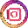
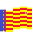
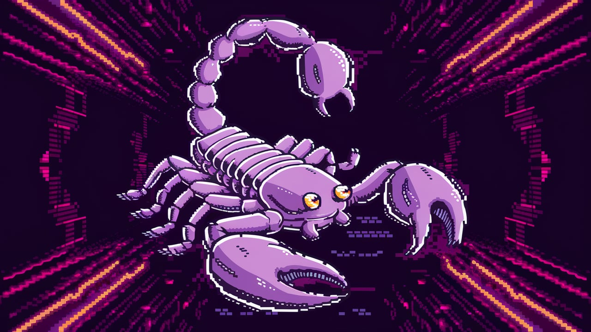
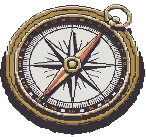
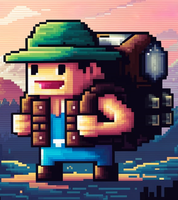

Petrer Explora

free-tour

Discover routes, tours, history and magic, all for free and at no cost
!
Scorpion route _ Lv1

Explore some of the oldest animals on Earth.
night route.
START


Sometimes going backwards is the bravest way forward.
!
Go back!